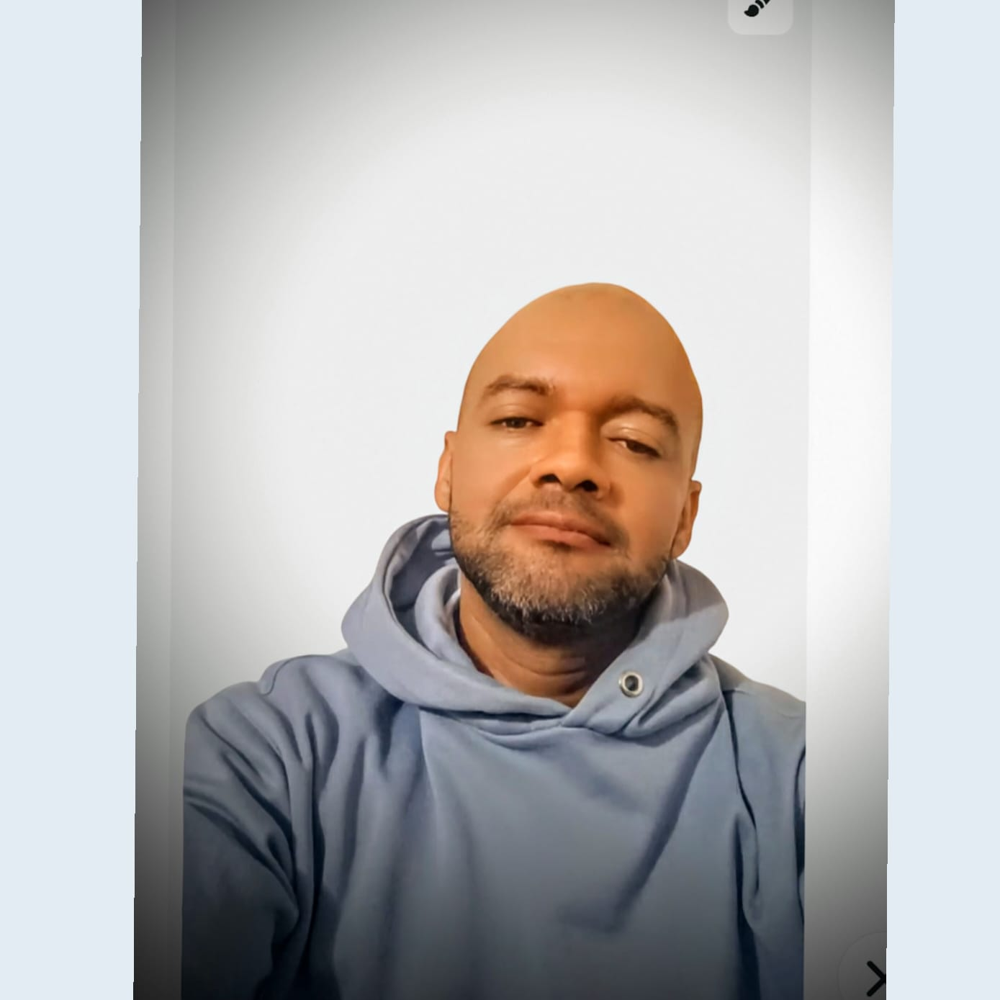

| BIOGRAFIA | |||
|---|---|---|---|
|  | |||
| Perfil | |||
|
psicólogo clínico con más de 10 años de experiencia en el acompañamiento emocional, la intervención en crisis y el desarrollo de herramientas digitales para el bienestar mental. Mi enfoque combina la ciencia del comportamiento humano con la innovación tecnológica, creando puentes entre la psicología tradicional y las nuevas formas de interacción digital. Me gradué de la Universidad Cooperativa de Colombia, donde también cursé una especialización en Psicología de la Salud. Posteriormente, me certifiqué en desarrollo web y programación en Python, lo que me permitió diseñar plataformas interactivas para la gestión emocional, el seguimiento terapéutico y la educación psicológica. He trabajado como consultor en proyectos de salud mental digital, desarrollando contenido para redes sociales, blogs y campañas de prevención. También he creado aplicaciones móviles que promueven el autocuidado, la meditación guiada y el acceso a recursos psicológicos en línea. Creo firmemente que la tecnología puede humanizar la atención psicológica, haciéndola más accesible, personalizada y empática. Mi misión es transformar la forma en que las personas se relacionan con su salud mental, combinando conocimiento científico, creatividad y herramientas digitales. |
|||
| Hobbies | |||
|
|||
| Sitios Visistados | |||
|
|||
| valores que me representan | |||
|
|||